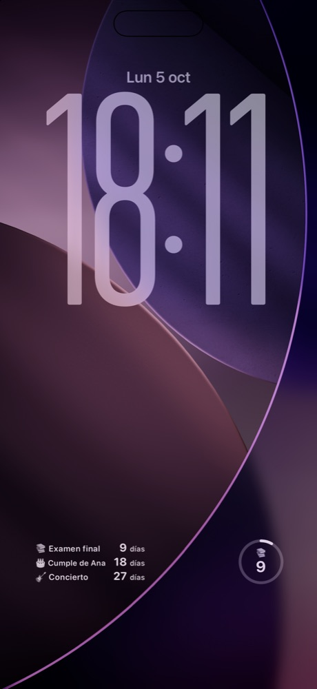
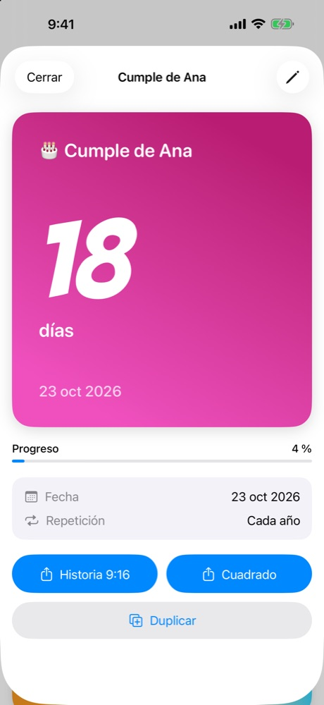

AunQueda
Cuentas atrás con widgets que son tuyos.
Cuenta los días que faltan para lo que te importa: vacaciones, cumpleaños, Reyes, una boda o un examen. AunQueda te lo pone en la pantalla de inicio y en la de bloqueo, con el aspecto que tú elijas.
Disponible en App Store


